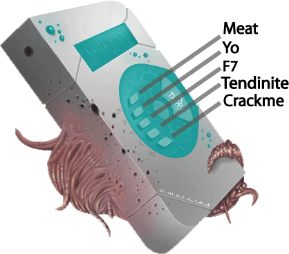

Date de publication : 8 mai 2007 15h15
Auteur : BeatriX
1.Introduction
Nous allons aujourd'hui nous intéresser au binaire Meloquynthe.exe. Il s'agit d'un petit défi réalisé par ++Meat (de chez NAS) et YoleJedi (de chez LABO) et proposé sur les forums de ForumCrack et de la FRET. Cette article n'était pas censé sortir un jour mais à la demande de Guetta, j'ai repris le travail que j'avais laissé en suspend. J'ai finalement repris le goût pour l'analyse de ce défi et ceci m'a permis de tester un outil de "désobfuscation" maison qui utilise ma lib de désassemblage BeaEngine 2.1. Je vais donc vous proposer ici une analyse à peu près complète de ce keygenme mais je vais surtout mettre en lumière la partie "protection" de ce programme.
Voici, dans le désordre, les différents points forts de ce défi :
- Utilisation du multi-threading : ce keygenme ne compte pas moins de 8 threads durant l'exécution !
- Utilisation des WaveOut : La musique est gérée par ce jeu de fonctions windows pour lire le format WAV.
- Obfuscation du code : un moteur a été utilisé pour rendre la lecture du code plus difficile.
1.1 Première approche
Ce keygenme peut être considéré comme un petit digicode composé d'un clavier de 5 touches. Au démarrage du binaire, Une combinaison secrète de ces 5 touches ( avec possibilités de répétitions) est générée de façon aléatoire. Il s'agit donc, comme pour entrer dans un hall d'immeuble, de composer le code secret dans le bon ordre.
Néanmoins, il ne s'agit pas ici d'un digicode classique. Si la séquence entrée par l'utilisateur est erronée, la combinaison secrète est changée immédiatement (toujours de façon aléatoire).
A ceci s'ajoute une petite contrainte : chacune des 5 touches du digicode ne peut être activée qu'à des instants bien précis au risque de générer une nouvelle combinaison secrète. Les instants sont identifiables à la bande sonore qui se joue en tâche de fond. Si vous tendez l'oreille, vous pouvez entendre 5 paroles distincts : Meat - Yo - F7 - Tendinite et Crackme qui sont produites les unes derrière les autres dans un ordre complètement aléatoire.
Chaque touche du digicode réagit exclusivement à l'une parole citées ci-dessus. Le petit schéma ci-dessous résume la correspondance touche - parole :

Pour finir et pour pimenter le tout, si la combinaison secrète n'est pas en cours de validation par l'utilisateur, elle peut changer au fil du temps de façon imprévisible.
Le keygen qui sera codé doit donc être capable de:
- récupérer la combinaison secrète
- détecter tout changement de combinaison en cas de saisie erronée.
- détecter tout changement de combinaison aléatoire dans le temps
1.2. Un peu plus en profondeur...
Maintenant que nous avons le comportement général du keygenme, nous pouvons organiser l'analyse en essayant de détailler chacun des points évoqués. Nous allons en particulier répondre aux questions suivantes :
1. Comment meloquynthe gère-t-il la saisie des touches ?
Il ne s'agit ni plus ni moins que d'une simple WinProc qui reçoit les messages WM_COMMAND.
2. Comment meloquynthe gère-t-il le contrôle de la validité de la combinaison saisie ?
Là encore, c'est la WinProc qui s'en charge. L'algorithme de vérification (assez optimisé) ne sera pas abordé. Je ne présenterai que son fonctionnement dans les grandes lignes.
3. Comment meloquynthe gère-t-il la génération de la combinaison secrète aléatoire ?
Nous verrons que meloquynthe crée un thread spécial pour cette tâche et que l'algorithme de génération n'est pas si trivial que ça.
4. Comment meloquynthe gère-t-il la bande sonore et la correspondance touche - paroles ?
Il s'adresse à la carte son à l'aide des fonctions WaveOut. Nous verrons qu'il utilise un thread pour choisir les morceaux à jouer et que la vérification de la correspondance touche-paroles se fait dans la WinProc.
5. Quel algorithme adopter pour le keygen ?
Nous verrons que le keygen peut récupérer les informations nécessaires par un simple ReadProcessMemory sur 4 bytes.
Copyright (C)- FRET (2007)